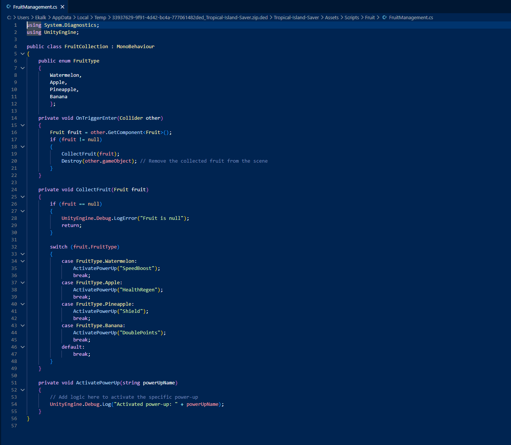
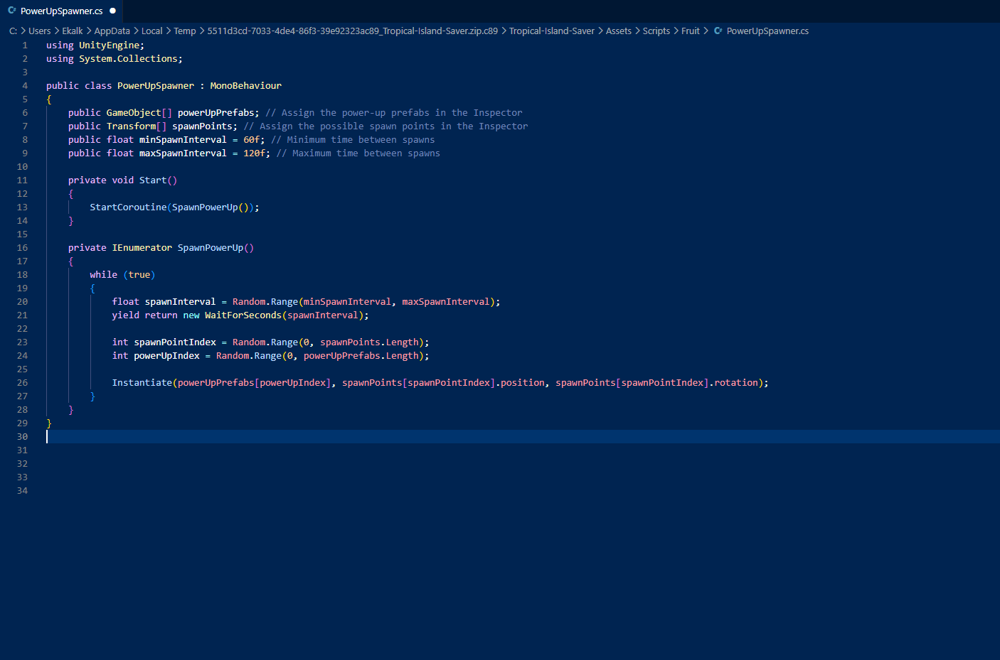
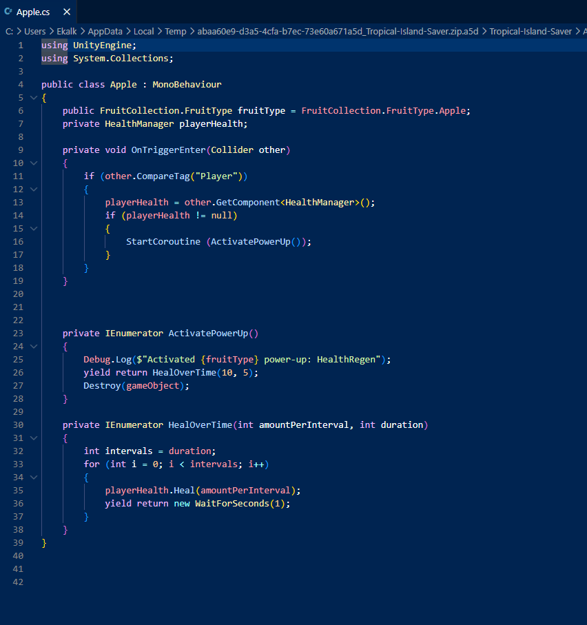
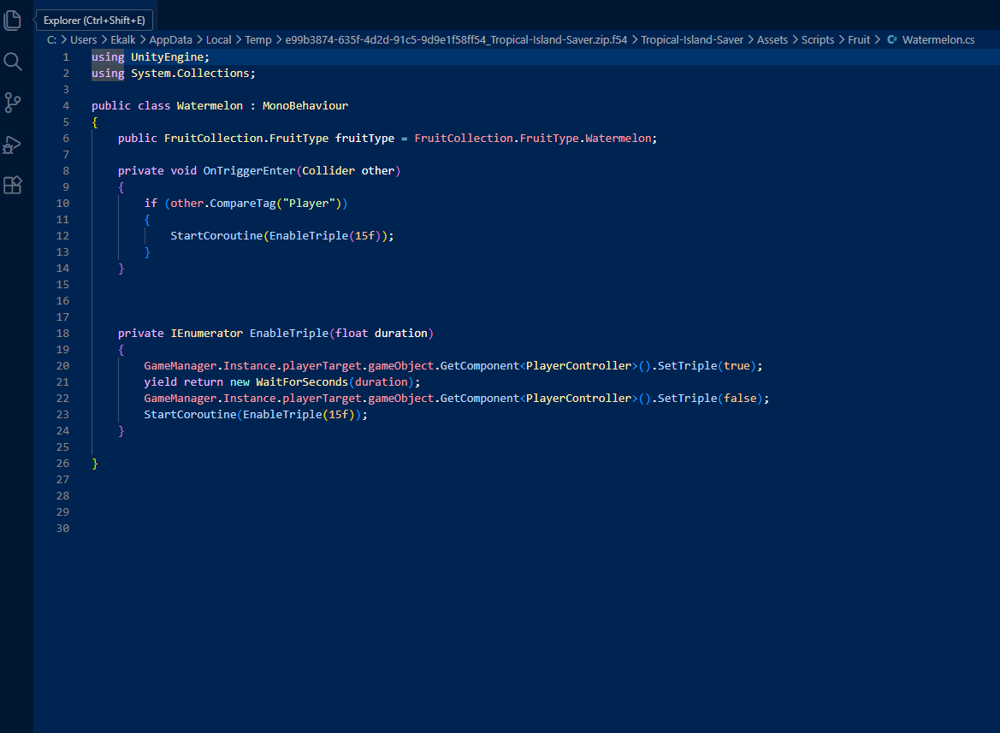
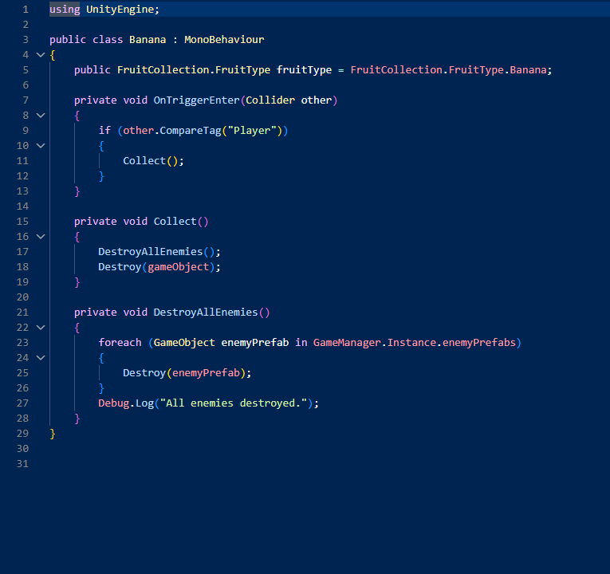
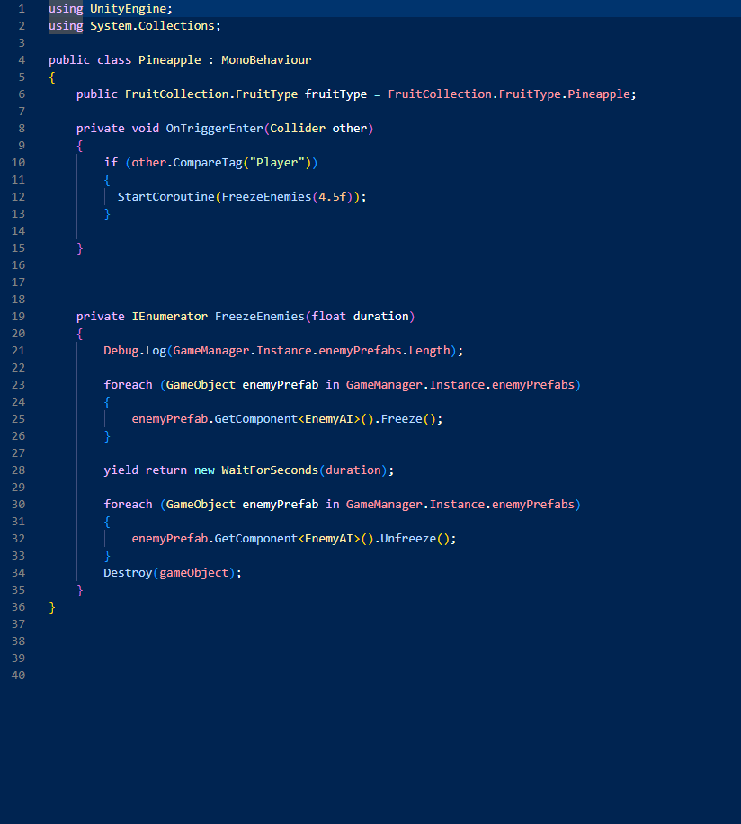

An augmented reality mobile game where waves of pirates invade the real world through your phone's camera. Built in Unity with AR Foundations, Pirate Frenzy draws inspiration from the wave-based survival mechanics of Call of Duty: Zombies — transplanted into an AR experience where enemies spawn in your actual physical environment. Players fight back using power-ups and quick reflexes across escalating waves, anywhere they play.
Pirate Frenzy was built as a collaborative team project with the goal of shipping a polished, fun AR mobile game from the ground up. The core inspiration came from Call of Duty: Zombies — specifically its wave-based survival structure, escalating difficulty, and the way power-ups create those clutch moments mid-run. The question we asked: what would that feel like if the enemies were pirates, spawning right in your living room?
Using Unity's AR Foundations framework, enemy spawns and gameplay elements are anchored to real-world surfaces detected through the device camera. This gives the game an immersive quality that traditional mobile games can't replicate — players physically move around their space to engage enemies and collect power-ups, making every session feel unique to wherever they're playing.
I designed and built the entire fruit power-up system in C#. Power-ups spawn at timed intervals during enemy waves, each fruit granting a different temporary ability — speed boosts, damage multipliers, health regeneration, and kill all enemies. The system manages spawn timing, per-type effect logic, duration timers, and clean teardown when effects expire. The design was directly influenced by CoD Zombies' power-up drops, where grabbing the right item at the right moment can flip a losing run into a comeback.
I created all of the main menu artwork and animation from scratch using Photoshop and Adobe Animate. The goal was to immediately establish the pirate theme and feel polished enough to set the right tone before a player ever taps start. I illustrated the key art, then brought the screen to life with animated elements built and sequenced in Adobe Animate.
C# scripts handling fruit power-up spawn logic, effect application, duration timing, and teardown.






Click any image to expand